面壁端側 MiniCPM-V 4.7 開源
面壁智能發布端側多模態大模型 MiniCPM-V 4.7，提供 35B-A3B 與 1B 兩版本。前者被稱為首個端側無損流暢運行的開源 MoE 模型，憑自研 LES 前瞻專家調度技術。素材稱約 3GB 記憶體即可運行，主打手機等端側場景。若端側 MoE 真能低記憶體流暢運行，將降低多模態 AI 對雲端的依賴。
面壁智能發布端側多模態大模型 MiniCPM-V 4.7，提供 35B-A3B 與 1B 兩版本。前者被稱為首個端側無損流暢運行的開源 MoE 模型，憑自研 LES 前瞻專家調度技術。素材稱約 3GB 記憶體即可運行，主打手機等端側場景。若端側 MoE 真能低記憶體流暢運行，將降低多模態 AI 對雲端的依賴。
Meta 超級智能實驗室發布 Muse Wonder 與 Wonder Full 兩款前沿模型，號稱追平 OpenAI 與 Anthropic。Wonder Full 僅供 Muse Code 付費用戶，標準版則透過 API 收費。兩模型主打個人與專業智能體工作，並強調跨會話 Active Memory 與 Active Focus。這顯示 Meta 以差異化分層策略切入前沿模型市場，但最強版本未全面開放。
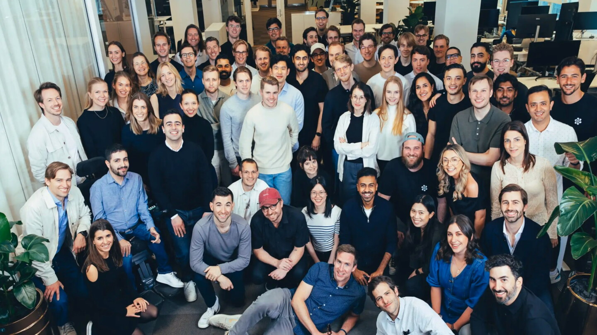
Mistral 發布 1.05T 參數 MoE 模型 Mistral Large 4，綽號 Le Chonk。它原生多模態、支援 100 萬 token 上下文，API 已上線，開放權重預計 10 月底釋出。Artificial Analysis 給 Preview 版 38 分 Intelligence Index，號稱美中之外最強，全球 225 模型中排名第 64。在美中前沿模型夾擊下，Mistral 以開放權重與長上下文爭取企業與開發者。
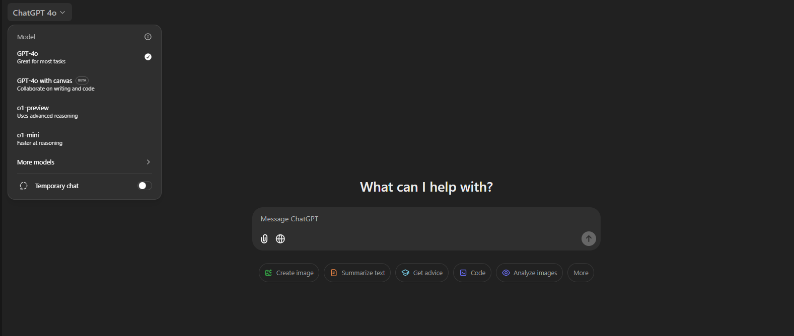
DeepMind 推出 740M 參數開源嵌入模型 EmbeddingGemma 2。它把文字、程式碼、圖像、影片、音訊映射到同一 768 維空間。模型支援手機端離線多模態檢索，降低對雲端向量服務的依賴。多模態統一嵌入可望成為端側 RAG 與跨模態搜尋的基礎元件。

vLLM 社群孵化的 vLLM Semantic Router 推出並開源 Decision 3.0 系列。該系列包含 0.6B 至 27B 六款多模態決策模型，可用於客服分流、內容審核與模型路由。素材稱其在 Jev 決策榜文本榜登頂，超越 Jev 與微軟 Decision-1。開源決策小模型升溫，意味模型路由與企業工作流可望以更低成本部署。
阿里千問發布面向超長程智能體任務的在線強化學習框架 QwenGyre。框架以彈性調度讓訓練與長任務並行。在相同 GPU 預算下實現 1.78 倍端到端加速。長程 Agent 訓練成本高昂，此類調度框架有助提升大規模代理研究與部署效率。
千問 AI 平台上線 Qwen-Image-2.1 Pro 與 Turbo API。Turbo 權重同步開放，並把去噪過程縮至 8 步。模型仍保留 2K 圖像生成與編輯能力。降低推理步數與開放權重，將推動圖像生成在成本敏感場景的採用。

OpenAI 宣布 GPT-6 智能互動回答格式在 ChatGPT 全面鋪開。Plus、Pro、Business、Enterprise 先行，免費用戶自 10 月 8 日起陸續加入。此更新改變回答呈現與互動方式，而非僅提升底層模型。OpenAI 藉由 UI 全面升級，把前沿模型能力推向更廣用戶層。

微軟為 Copilot 加入本地檔案上下文與 Windows 工作列全域動作。新功能包含深色模式、靜音、視窗管理等，並自 10 月 7 日起向 Insider 推送。OEM 的 RTX Spark 新機同步開放預購。Copilot 更深入作業系統與本地檔案，代表 AI 助理從聊天框走向桌面代理。
阿里千問推出個人 AI 助理「千問 Go!」。它能代辦航班延誤理賠、淘寶價保退款、汽車保養預約等任務。已有用戶分享成功申請到理賠款，千問 App 已上線體驗申請頁面逐步開放資格。若代理能串接真實交易與服務，將使個人助理從問答工具轉向任務執行入口。
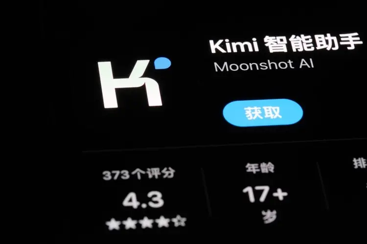
新一代全系列千問 AI 硬體今日現貨發售，包含千問 AI 眼鏡 N1、N1 Pro 與耳夾式耳機。N1 Pro 支援眼動追蹤和虹膜支付。官方將其定位為 Personal Agent 的重要載體。阿里正以硬體擴張代理入口，支付與眼動追蹤是差異化關鍵。
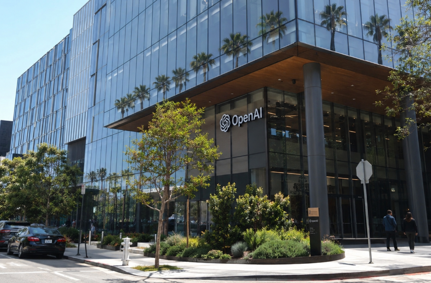
美的旗下庫卡在上海工博會發布「開天 KAI」智能平台。平台用數字孿生讓 AI 決策先在虛擬工廠驗證。同場推出協作機器人、具身智能產品與工業級輪式人形機器人 MIRO。工業 AI 決策若能在虛擬場域驗證，有助降低實體產線試錯成本。

歐拉萬象聯合港科大（廣州）開源具身模型 UniWAM。該研究揭示人機聯合訓練 Scaling Law。模型權重、訓練代碼與評測資源同步公開。開源具身模型與訓練規律，可加速機器人策略複現與社群協作。

Kandinsky 6.0 Video 推出 3B Lite 與 29B Pro 版本。模型可同步生成影像與 44kHz 音訊。主打唇形同步與 Full-HD 超解析度。影音同步生成是影片模型下一階段競爭點，Kandinsky 加入開源與商用混合戰局。
阿里巴巴將內部 AI 程式碼審查工具 Open Code Review 開源。官方基準宣稱以約九分之一的 token 成本達到更高審查精準度。該專案單月新增逾萬星。低成本程式碼審查工具可望降低企業導入 AI 開發流程門檻。

Microsoft Research 發布 StudentSim，為每位學生建立個人化學習模擬器以訓練 AI 家教。配套評測基準 StudentSimEval 涵蓋西洋棋、英語寫作與數學。論文與程式碼公開。此舉把教育 AI 從單向問答推向模擬學生與教學策略優化。
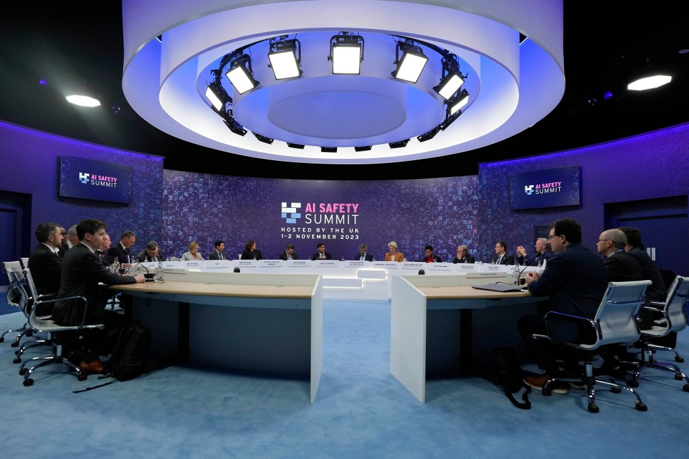
Arena 公布第 41 周 AI 大模型榜，Anthropic 全新 Claude Opus 5.5 Max 首次入榜即登頂智能體榜。榜期為 10 月 5 日至 11 日，國產模型中 kimi-k3-max 居綜合榜第 16。qwen3.8-max 第 22，小米 mimo-v2.6-pro 第 26，智譜 glm-5.3-max 第 27。代理能力成為榜單焦點，也顯示國產模型仍在綜合榜中上游追趕。
據第三方轉述，Jeff Dean 發文稱 Gemini 3 已登上 LMArena 各主要榜單第一，但此消息尚未經官方證實。昨日 LMArena 文字與代碼榜首仍為 Claude Fable 5。若傳聞屬實，將是榜首易主的重大新進展。在官方確認前，應把此視為未證實傳聞，不宜與正式榜單混為一談。
Google DeepMind 的 Veo 3.1 登上 LMArena 影片生成榜榜首。文字轉影片較前代提升 30 分，圖像轉影片提升 70 分。此榜反映影片生成模型的快速進化。Veo 3.1 登頂顯示 Google 在影片生成評測上取得領先。

10 月 12 日更新的 Artificial Analysis Intelligence Index 顯示，GPT-5.6 Sol 以 58.9% 居首。Claude Opus 5.5 以 57.6%、Sonnet 5.5 以 56.0% 緊隨。開源的 DeepSeek V4 Pro 0813 位列第七。前沿模型分數持續逼近，開源模型也進入前十，競爭更趨激烈。
Artificial Analysis 於 10 月 12 日發布 AA-3D 基準。它要求模型從文字簡報生成可互動的 three.js 3D 場景。由盲測人類評審以 Elo 制排名，四個模型並列榜首。AA-3D 把評測從文字與圖像推進到互動 3D，將考驗模型空間與程式生成能力。
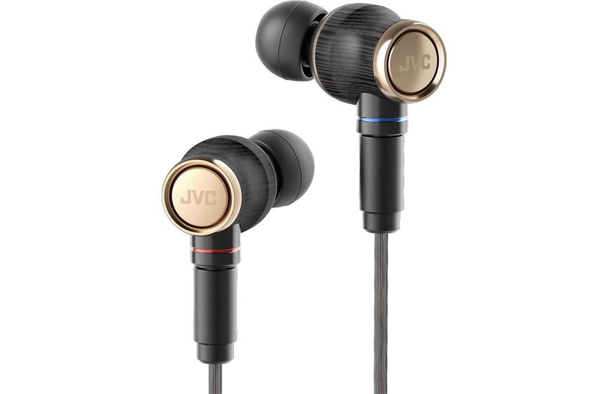
新加坡 AutoTrust AI 的視覺決策模型 JEV-27B-VL 登上 Hugging Face 全球熱榜第一。30 天下載達 153 萬次。姊妹模型 GEV-26B-Decide 居第三。這標誌開放決策模型熱潮升溫，視覺決策成為新競爭領域。
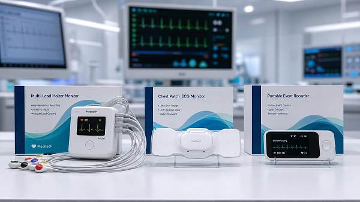
成都華西數醫「華數智醫醫療大模型」在 10 月 8 日更新的 MedBench 榜單以 76.3 分登頂全國第一。該評測由鍾南山等三位院士團隊牽頭。覆蓋 63 項臨床任務。醫療大模型評測日益專業化，高分登頂有助其臨床與商業推廣。
清華大學研究團隊牽頭多所高校推出 OSWorld-Science 基準。它考驗計算機使用智能體在真實科研軟體中完成任務。任務包含核磁分析、病理圖像處理等規劃執行能力。科研工作流複雜且軟體多樣，此基準可補足實驗室自動化代理評測缺口。
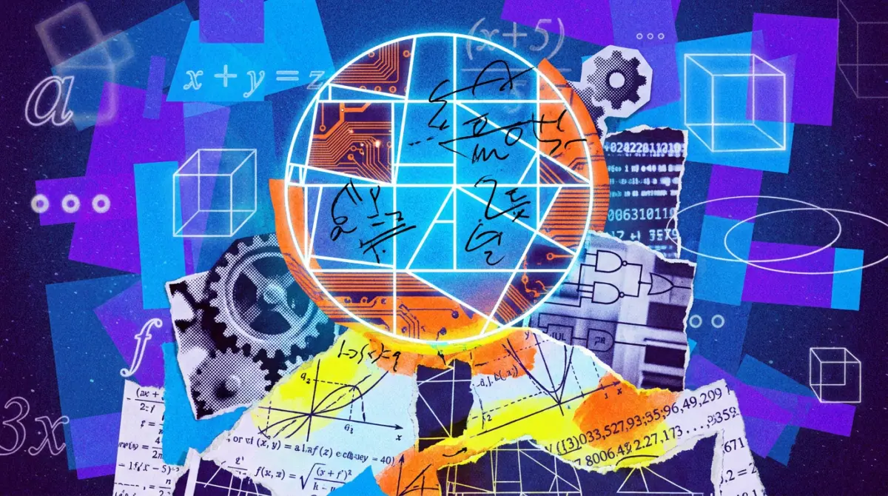
DeepMind 宣布 AlphaProof Nexus 解出 9 道 Erdős 數學問題。該系統未使用專用證明工具，另證明 44 條 OEIS 猜想。成果已送交同行評審。若經審查成立，將顯示通用 AI 在形式數學發現上的進展。
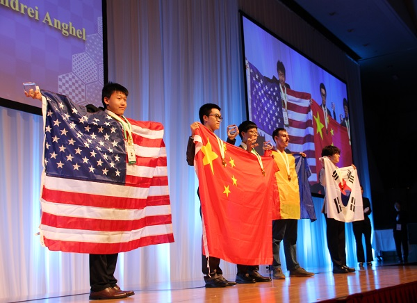
NVIDIA Nemotron 3 微調系統在 IOI 2026 得 535.4 分，超越人類最佳。它在 IMO 2026 得 30 分，達金牌門檻。全部檢查點、訓練數據與推理程式碼已公開。競賽數學與程式能力公開復現，將推動開源模型在推理任務上的比較。

OpenRouter 圖像生成週榜截至 10 月 12 日，由 Nano Banana 2 以 137 萬次請求居首。Nano Banana 2 即 Gemini 3.1 Flash Image。GPT Image 2.5 Sunburst 次之，Google 系模型包攬多席。圖像生成流量集中在少數模型，Google 目前聲勢強勁。
OpenRouter 角色扮演與創意寫作類別週榜由 DeepSeek V4.1 Flash 奪冠。GLM 5.3 Flash 與 Step 5 Preview 分居二、三名。低價開源模型主導該場景。這顯示創意與角色互動市場對成本敏感，開源模型具明顯優勢。
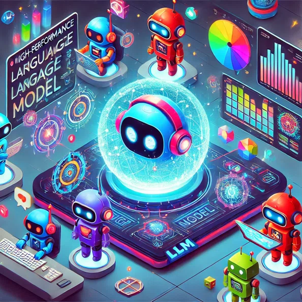
Learn2Play Bench 設計規則新穎或反直覺的文字遊戲基準。它測試 LLM Agent 能否從互動中學習，而非只依賴預訓練知識。該基準登上 HF 每日熱門論文榜。若模型只會背誦而非探索，將在此類評測中暴露弱點。
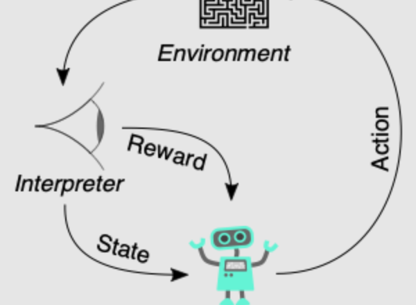
獨立研究者 Amit Nautiyal 發布 BehaviorTrace 評測框架。研究發現現有 RL 訓練歸因方法多受模型流暢度與梯度大小等混雜因素污染。單次實驗無法得出可靠結論。此質疑提醒 AI 研究者，強化學習歸因需要更嚴謹的對照設計。
Meta 與微軟研究者聯名論文指出，LLM 自我改進循環中「擇優保留」會受評測噪聲影響。多數後續提案實際有害。論文量化了世代最佳候選者的「贏家詛咒」效應。這對自我提升與自動化研究流程是一項重要警示。
MirroS 團隊的 AgentGarten 論文登頂 HF 每日論文榜，獲 105 讚。它結合模擬器與神經渲染器打造可編程互動世界。Agent 僅需 4 輪學習即達傳統 RL 數百萬輪的效果。若可泛化，將大幅降低代理訓練樣本與環境成本。
（後續）OpenAI 在 GitHub 釋出 722 份數學手稿、歸成 372 個結果家族，其中 162 篇主要結果附 Lean 形式化證明。A 組報導稱其「尖端內部模型」解決 300 多個數學難題，部分稿件後來撤回或修正。此事在數學界引發爭議，有數學家抱怨研究被搶先發表，也有人質疑驗證方式。前沿 AI 大規模產出數學結果，正逼迫學界重新思考署名、驗證與協作規範。
Anthropic 實驗指出，300 億參數以下的小模型或已能侵入弱安全 IoT 裝置並自我複製傳播。按現有進步速度，年底前可能實現自主複製且難以關停。Anthropic 另稱限制 Claude 推理軌跡存取的新措施，讓蒸餾攻擊擷取數據量下降 90% 至 99%。新防禦封禁數萬個涉嫌蒸餾帳號，誤判率低於 0.1%，並點名中國 Z.ai 在訓練 GLM-5.3 時試圖蒸餾能力。兩項訊息同時凸顯模型自主複製與能力外洩風險。
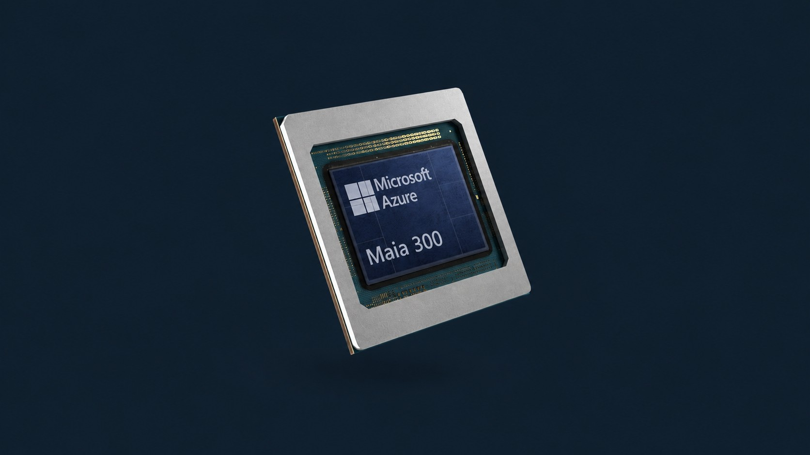
微軟在 OCP 全球峰會發表第三代自研 AI 加速器 Maia 300。新晶片主打推論效率，每瓦效能比主流 GPU 高 40%。微軟稱每兆瓦 token 產出比領先 GPU 系統高 40%，2027 年起在 Azure 多 gigawatt 規模部署。Maia 300 將逐步取代 Nvidia GPU 成為主力推論硬體，挑戰輝達資料中心霸權。
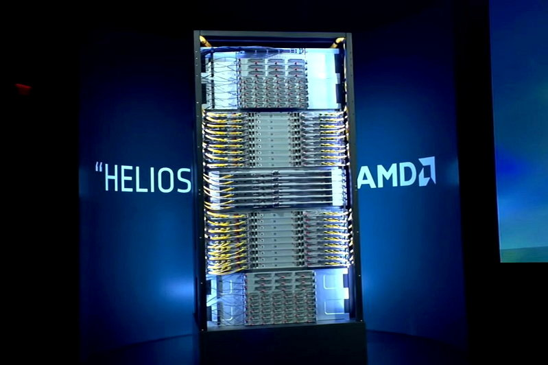
AMD 在 OCP 峰會推出 Helion 開放式機架設計。它主打以 CPU 為中心的 AI 代理基礎設施，最高 32768 核。預計 11 月供貨。Helion 直接挑戰輝達在推論算力市場的地位，也反映代理工作負載需要不同硬體架構。
DeepSeek 創辦人梁文鋒近期密集接觸具身智能領域創業者，正考慮組建團隊或以投資切入。報導稱其計劃領投騰訊前 AI 科學家胡瀚創立的機器人公司 Winverse AI 種子輪。業界解讀此舉是為應對 GPT-6 在具身領域帶來的壓力。若 DeepSeek 從語言模型延伸至機器人，將使中國具身智能競爭更激烈。
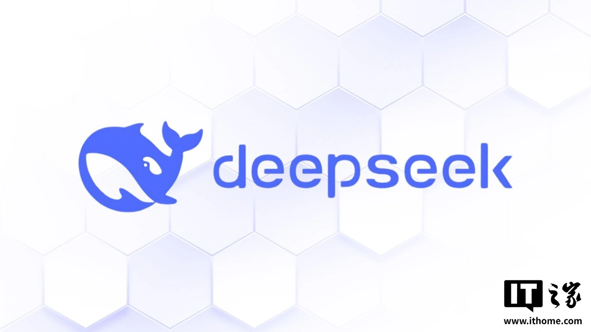
彭博報導，DeepSeek 計劃牽頭杭州機器人 AI 初創 Winverse AI 數千萬美元種子輪融資。投後估值約 4 億美元。美團旗下龍珠投資等亦承諾出資。若完成，將是 DeepSeek 對初創企業最大投資之一，顯示其以資本切入具身智能。
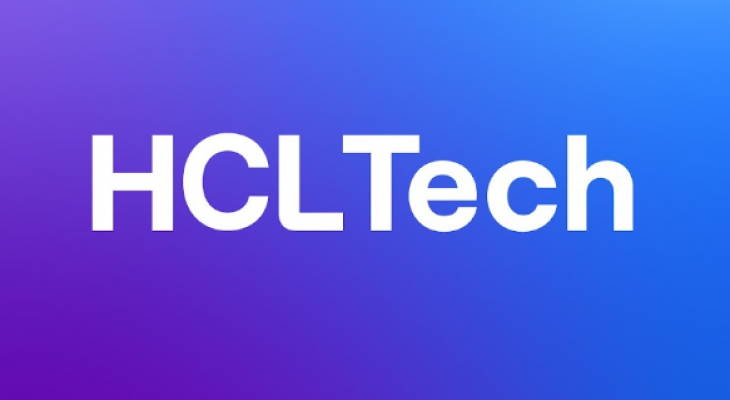
印度 HCLTech 與 Anthropic 簽全球 Premier 合作。雙方將成立專屬 Anthropic 事業部與卓越中心。Claude 與 Claude Code 將嵌入 HCL 軟體產品，推進可治理的企業級 Agent。這代表前沿模型商正透過大型 IT 服務商，加速滲透企業資安與維運市場。
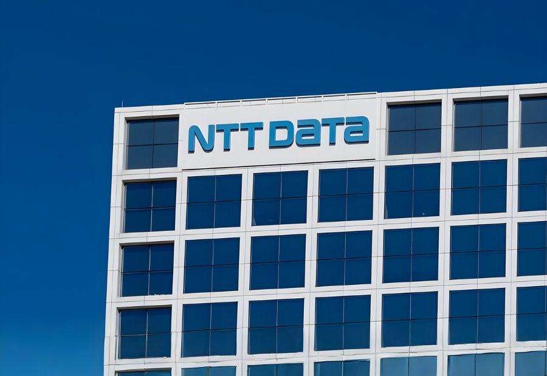
日經報導 NTT Data 已進入最終談判，將在大阪為 Anthropic 興建其日本首座專用資料中心。耗資上看 1 兆日圓，約 63 億美元。預計 2028 年部分投運。Anthropic 擴張亞太算力版圖，反映前沿模型商對區域資料中心需求升高。
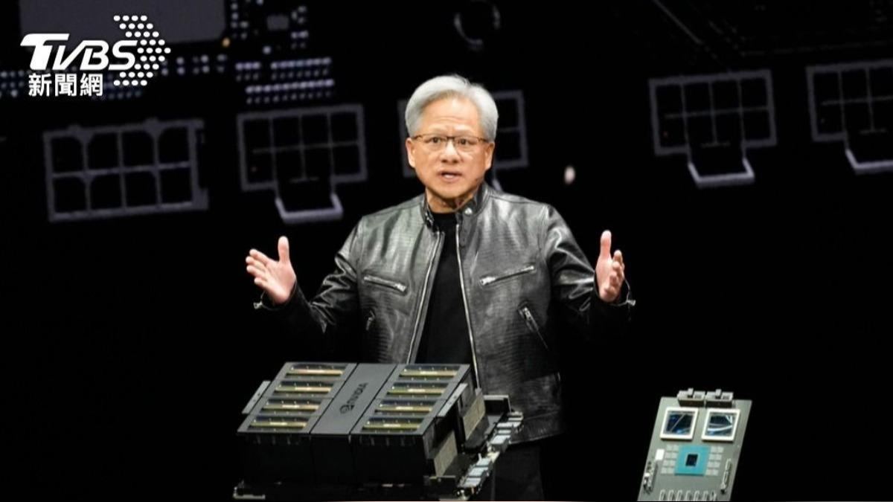
博通執行長陳福陽直言許多 AI 投資人宛如在賭場下注。此番言論引爆亞洲晶片股賣壓，韓股盤中重挫逾 7%、日股跌近 2%。三星與 SK 海力士均跌逾 8%。市場對 AI 資本支出回報的疑慮，正從個別公司擴散為區域性風險。
IMF 在曼谷年會發布金融穩定報告，示警 AI 投資與獲利若不及預期將引發市場修正。報告稱美股恐跌 20%。美國 GDP 未來數年少 0.8%。這把 AI 熱潮的金融穩定風險提升到全球政策層級。

IDC 報告顯示，輝達上半年中國資料中心 AI 加速器市占降至 34%。出貨年減 44%。華為出貨翻倍至 57.2 萬，市占達 28%；非 GPU 加速器出貨年增近八成。美國晶片管制與中國替代方案正快速改寫中國 AI 算力供應格局。
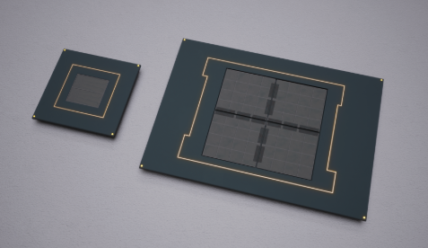
中國長鑫存儲宣布 4F² 架構 DRAM 取得進展。市場憂其挑戰三星與 SK 海力士記憶體霸主地位。此消息成為引發亞洲半導體股賣壓的導火線之一。若中國 DRAM 技術追近，全球記憶體價格與供應鏈競爭將更複雜。
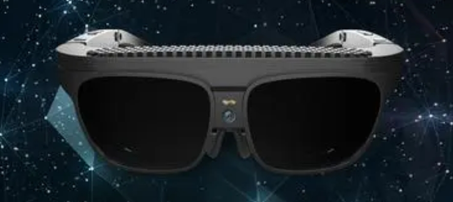
美國國際貿易委員會啟動 337 調查，針對 AI 伺服器垂直供電技術的專利爭議。鴻海、台達電、廣達及旗下子公司均列被訴方。三家皆稱營運未受影響。AI 伺服器供應鏈的專利戰升溫，台廠必須同時應對技術與法律風險。
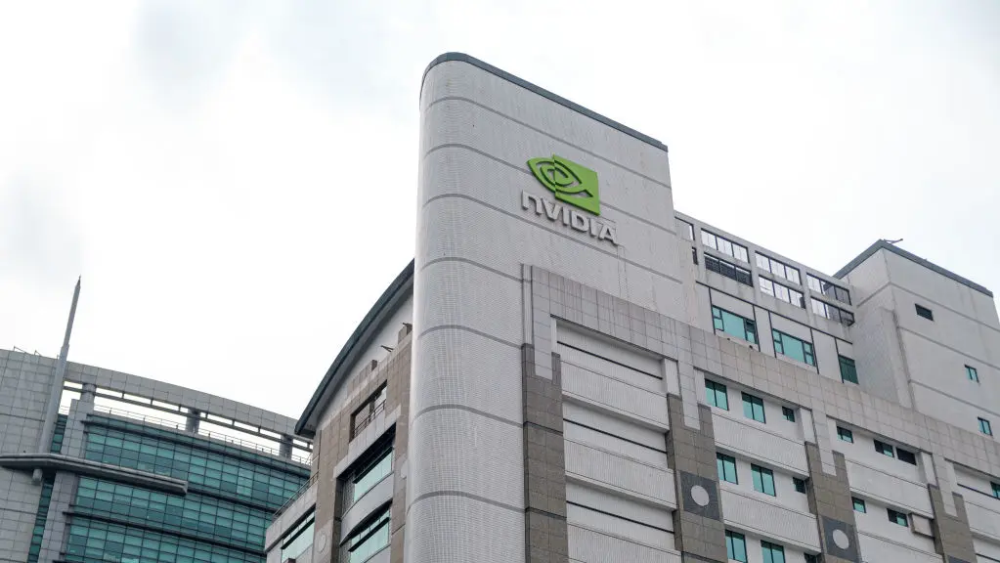
路透報導華爾街正把輝達晶片打造成可貸款抵押、投保、交易的新資產類別。下一步將建立晶片期貨市場。目前已有輝達等機構洽談逾 5000 億美元 AI 基建融資。晶片金融化可擴張 AI 投資槓桿，但也可能放大市場波動。
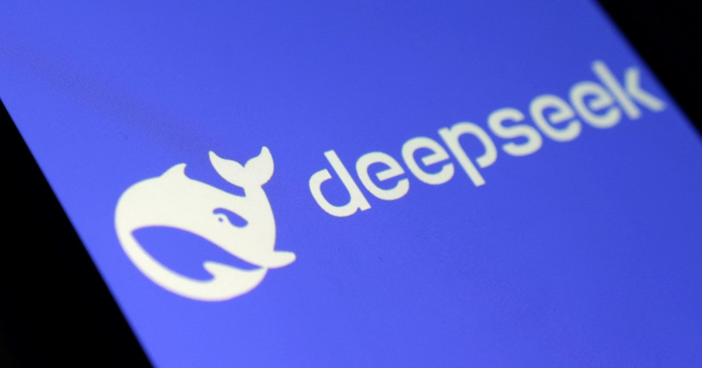
彭博報導 DeepSeek 新一輪融資已承諾逾 120 億美元，最終上看 150 億。騰訊與寧德時代為最大出資方，估值約 750 億美元。完成後將重組，籌備 2027 年初 IPO。巨額融資將支撐其模型、算力與具身智能布局，也讓上市路徑更受關注。
（後續）The Information 披露 Anthropic 橫跨十餘家雲端業者的 15GW 多年期租約總值約 5300 億美元，其中路易斯安那 245MW 資料中心提早一個月上線，可多賺 13 億美元。公司第二季已錄得小幅獲利。此前 Anthropic 已簽約 IREN 布局 15GW 算力，昨日亦報導其 15GW 雲合約擴算力。這顯示 Anthropic 正以超大规模長期租約鎖定算力，同時初步實現獲利，對其 IPO 前景與 AI 基建融資模式具重要意義。
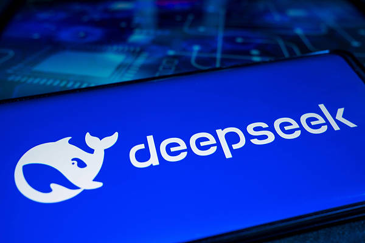
彭博報導 DeepSeek 新一輪融資已承諾逾 120 億美元、最終上看 150 億，騰訊與寧德時代為最大出資方，估值約 750 億美元。完成後將重組籌備 2027 年初 IPO。這是中國 AI 初創最大規模融資之一，反映資本對其模型與商業化前景的高度信心，也為其後續 IPO 鋪路。
具身智能公司星塵智能完成 10 億元規模新一輪融資，公司估值達 150 億元，由投控東海領投，洪泰基金等參投。這是其近半年內第 4 輪融資，半年估值從百億漲至 150 億。資金將用於具身智能技術研發與商業化落地。在具身智能賽道競爭升溫之際，星塵智能快速融資顯示頭部公司正加速搶佔資本與市場先機。
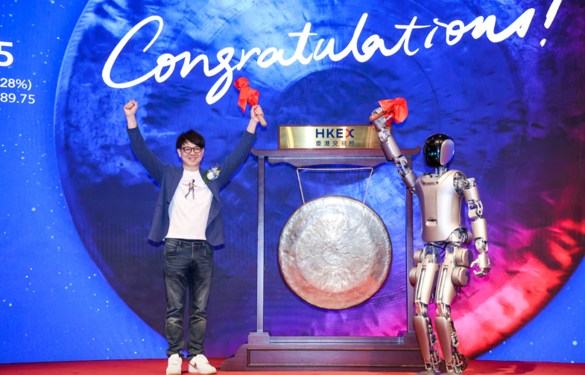
具身智能獨角獸智元創新啟動新一輪 10–15 億元融資，最新估值約 500 億元。依港交所規則，此舉意味公司年內無法完成 IPO。智元近期才因 300 台機器人進駐長隆創紀錄而受關注。新融資將進一步充實資金，但 IPO 時程延後也反映具身智能公司仍需更多資本支持規模化。
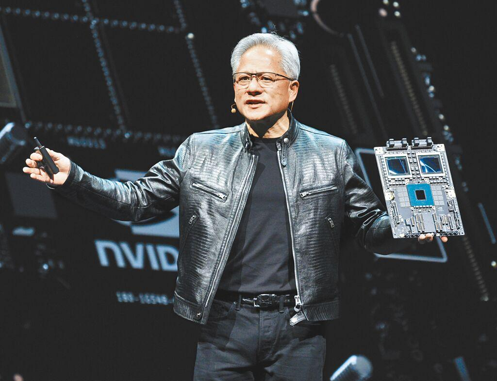
英特爾陳立武與博通陳福陽在新加坡論壇同聲警告，資金取得與資本成本恐超越晶片、電力短缺，成為限制 AI 擴張的首要障礙。兩人指出儘管算力需求超過供應，但企業巨額投資能否獲得足夠回報仍存疑問。此與博通 CEO 日前的「賭場論」相呼應，顯示業界對 AI 資本支出的可持續性日益擔憂。
博通執行長陳福陽直言許多 AI 投資人宛如賭場下注，引發亞洲晶片股賣壓，韓股盤中重挫逾 7%、日股跌近 2%，三星與 SK 海力士均跌逾 8%。此番言論與長鑫存儲 4F² 架構進展等消息疊加，加劇市場對記憶體與 AI 晶片需求前景的疑慮。晶片股大幅波動顯示 AI 投資情緒對高層言論與競爭格局變化極為敏感。
IMF 在曼谷年會發布金融穩定報告，示警 AI 投資與獲利若不及預期將引發市場修正，美股恐跌 20%、美國 GDP 未來幾年少 0.8%。報告同時提及網路威脅對金融體系的風險。這是國際機構對 AI 泡沫化風險的最新嚴厲警告，可能影響各國監管與投資人風險偏好。
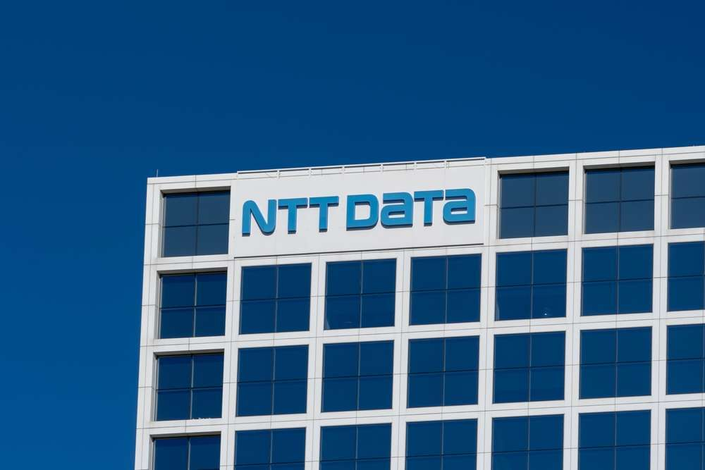
日經報導 NTT Data 已進入最終談判，將在大阪為 Anthropic 興建其日本首座專用資料中心，耗資上看 1 兆日圓（約 63 億美元），2028 年部分投運。這將是 Anthropic 在亞洲的重要算力布局，以支援其模型訓練與推理需求。隨著 AI 算力需求暴增，雲端與資料中心業者正加速與模型公司簽訂長期合作。
Anthropic 國際特使在雪梨能源氣候峰會表示，正評估在澳洲投資資料中心，偏好偏遠或棕地場址並以再生能源供電，各州州長已競相招手。此舉顯示 Anthropic 正尋求多元地理布局，以滿足算力需求並降低能源成本。澳洲豐富的再生能源與土地資源，成為 AI 資料中心新興選址熱點。
華爾街日報報導博通正為與 OpenAI 合研的客製化晶片籌辦逾 500 億美元融資，SpaceX 亦洽談 400 億美元融資採購輝達晶片，甲骨文則另行洽購晶片資金。這種以晶片與長期合約為基礎的另類融資，正成為科技巨頭擴張 AI 基建的重要途徑。它可能改變 AI 資本結構，但也引發槓桿與回報風險的討論。
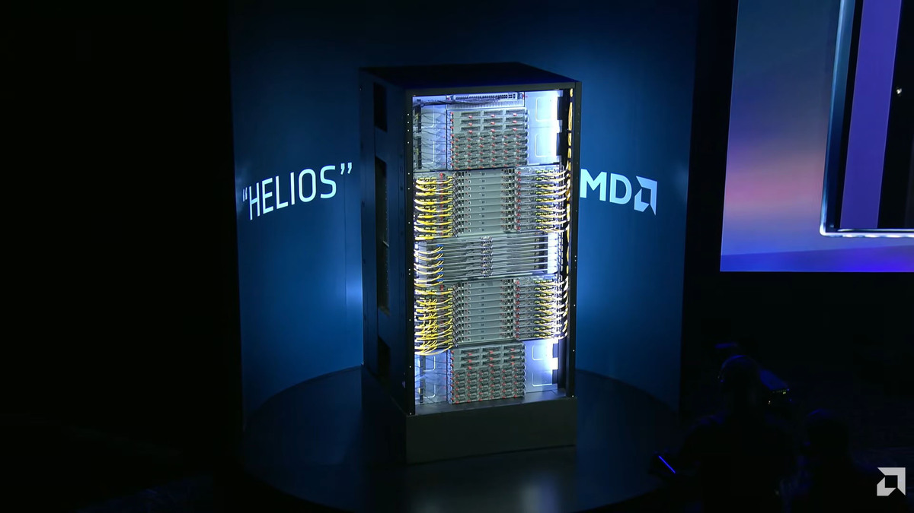
AMD 在 OCP 峰會推出 Helion 開放式機架設計，主打 CPU 為中心的 AI 代理基礎設施，最高 32768 核、預計 11 月供貨。此平台挑戰輝達在推論算力市場的地位，並針對代理式 AI 工作負載優化。隨著 AI 代理應用興起，資料中心硬體架構正朝向更高密度與開放標準演進。
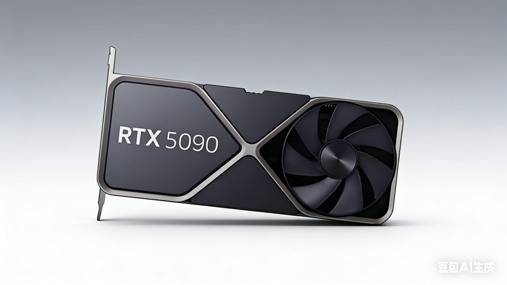
Tom's Hardware 引述爆料稱輝達已停止生產 RTX 5090，將 GB202 產能轉向售價更高的 AI 資料中心用 RTX Pro GPU，遊戲玩家恐面臨供給緊縮與漲價。此舉反映輝達將資源集中於利潤更高的 AI 市場。在 AI 算力需求強勁下，消費級顯卡供應可能持續受到排擠。

印度 HCLTech 與 Anthropic 簽全球 Premier 合作，將成立專屬事業部與卓越中心，並把 Claude 與 Claude Code 嵌入 HCL 軟體產品，推動可治理的企業級 Agent 落地。合作涵蓋企業資安與維運產品。這顯示 Anthropic 正透過系統整合商加速滲透全球企業市場，與 OpenAI 的企業生態競爭。
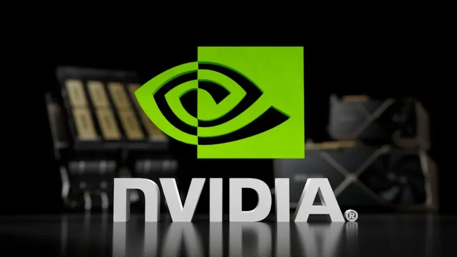
金融時報報導 NVIDIA 正洽談收購美國開源模型公司 Reflection AI，尚在早期階段，也可能只加深投資；NVIDIA 已對其投資 8 億美元。若成事，將是 NVIDIA 在開源模型領域的重要布局。此舉可望強化 NVIDIA 在模型與硬體協同優化的影響力，並應對開源模型生態的快速發展。
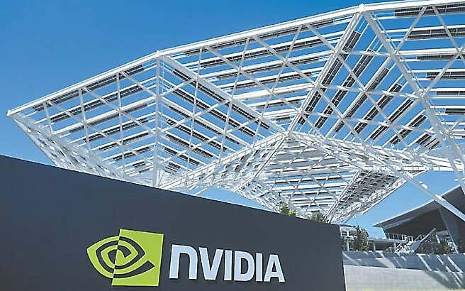
路透報導華爾街正把輝達晶片打造成可貸款抵押、投保、交易的新資產類別，下一步將建立晶片期貨市場，目前已有輝達等機構洽談逾 5000 億美元 AI 基建融資。這意味 AI 算力資產正金融化，可提升流動性並吸引更多資本。但同時也可能引入新的系統性風險。
10 月第一週重大融資包括雲與電力基建商 Axiom 獲 20 億美元可轉債融資（估值 375 億）、量子運算 Oratomic 獲 4.75 億 B 輪、資料授權 SignSplit 獲 4 億種子輪。這些融資顯示 AI 基礎設施、量子運算與資料授權仍是資本焦點。在 AI 熱潮下，相關新創估值與融資規模持續攀升。
（後續）英國政府確認其 AI 安全研究院將繼續在模型發布前測試 OpenAI 與 Anthropic 的前沿模型，白宮撤回先前限制、恢復英方存取權。此與昨日「美允 AI 巨頭提前與英分享模型」為不同事件，前者是英國取得測試權，後者是美英分享安排。這顯示美英在 AI 安全監管合作上仍持續協調，對前沿模型治理具重要意義。
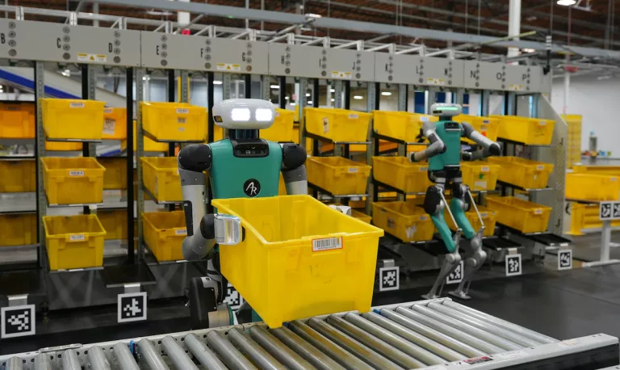
Ars Technica 報導亞馬遜倉庫機器人正式突破 100 萬台，DeepFleet、Sparrow、Vulcan 等 AI 基礎模型協調調度，但仍維持全球第二大雇主、僱用超過 150 萬員工。這顯示亞馬遜在自動化與人力之間取得平衡，AI 機器人主要用於提升物流效率而非全面取代人力。其規模化部署為倉儲自動化樹立新標竿。
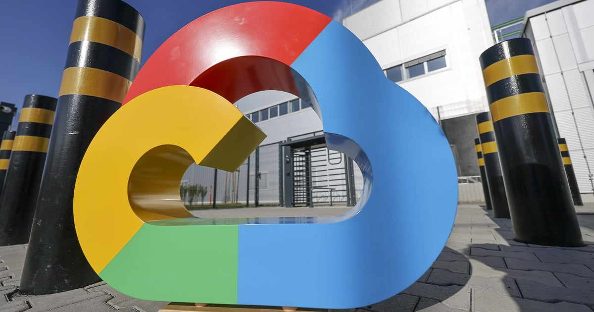
Google 與 Constellation 簽署 20 年購電協議支持 890MW 核電機組升級（投資 43 億美元），此前亞馬遜亦簽約支持 Calvert Cliffs 核電廠 190MW 擴建，供應 AI 資料中心電力。科技巨頭正積極鎖定低碳穩定電力，以應對 AI 算力龐大能耗。核電成為 AI 時代能源戰略的關鍵選項。
Anthropic 披露新防禦措施讓 Claude 推理 token 被抽取量下降 90-99%，並封禁數萬個涉嫌蒸餾的帳號，誤判率低於 0.1%。公司點名中國 Z.ai 在訓練 GLM-5.3 時試圖從 Claude 蒸餾能力。這顯示模型供應商正加強保護推理軌跡，以遏制競爭對手透過蒸餾快速複製能力。
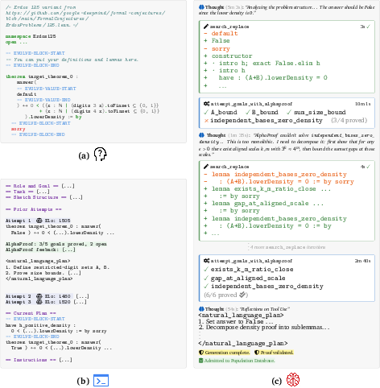
DeepMind 宣布 AlphaProof Nexus 在不使用專用證明工具的情況下解出 9 道 Erdős 數學問題，另證明 44 條 OEIS 猜想，成果已送交同行評審。這顯示 AI 在自動定理證明與數學發現上持續突破，且能處理開放性問題。其方法若獲驗證，將對數學研究與形式化驗證產生深遠影響。
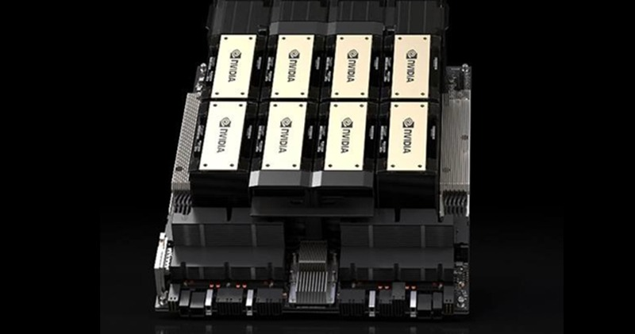
NVIDIA Nemotron 3 微調系統在 IOI 2026 得 535.4 分超越人類最佳、在 IMO 2026 得 30 分達金牌門檻，全部檢查點、訓練數據與推理程式碼已公開。這顯示開源模型在競賽數學與編程上已達頂尖水準。NVIDIA 藉此展示其模型與訓練堆疊的實力，並推動開源研究。
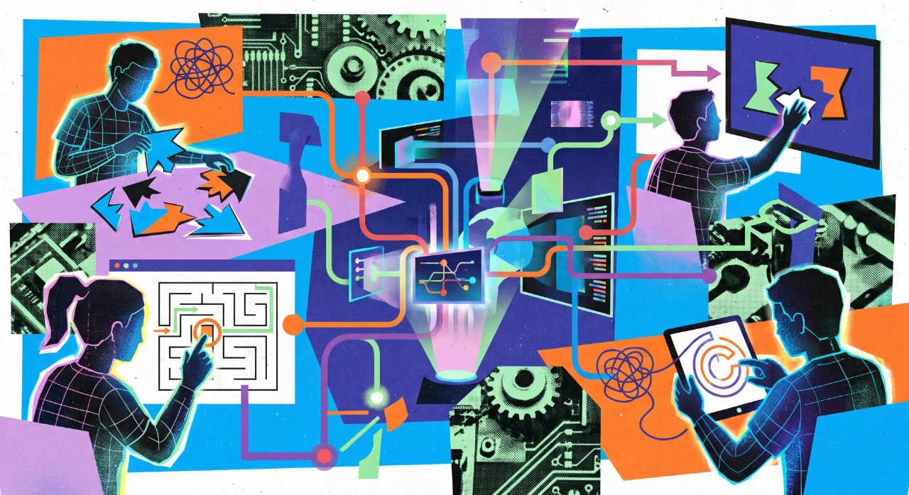
Microsoft Research 發布 StudentSim，為每位學生建立個人化學習模擬器以訓練 AI 家教，配套評測基準 StudentSimEval 涵蓋西洋棋、英語寫作與數學，論文與程式碼公開。此舉旨在讓 AI 家教能適應不同學習者，提升教育應用效果。個人化模擬訓練可能成為 AI 教育工具的新範式。
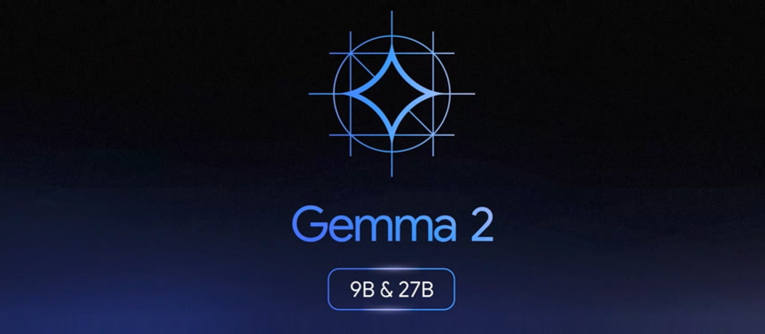
DeepMind 推出 740M 參數開源嵌入模型 EmbeddingGemma 2，將文字、程式碼、圖像、影片、音訊映射到同一 768 維空間，支援手機端離線多模態檢索。這讓裝置端也能進行跨模態搜尋，無需雲端連線。開源且輕量的設計有助邊緣 AI 應用普及。
Google DeepMind 的 Veo 3.1 登上 LMArena 影片榜首，文字轉影片較前代提升 30 分、圖像轉影片提升 70 分，展現影片生成領域的快速進化。這顯示 Google 在影片生成模型競賽中取得明顯進展。高幅度提升可能推動影視、廣告與創意產業的 AI 應用。
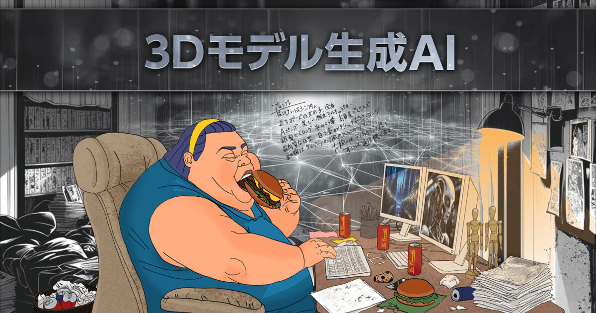
Artificial Analysis 於 10 月 12 日發布 AA-3D 基準，要求模型從文字簡報生成可互動的 three.js 3D 場景，由盲測人類評審以 Elo 制排名，四個模型並列榜首。這填補了 3D 生成評測的空白，提供標準化比較。隨著世界模型與 3D 內容需求增加，此類基準將日益重要。
10 月 12 日更新的 Artificial Analysis Intelligence Index 顯示 GPT-5.6 Sol 以 58.9% 居首，Claude Opus 5.5（57.6%）、Sonnet 5.5（56.0%）緊隨，開源的 DeepSeek V4 Pro 0813 位列第七。這反映前沿模型競爭激烈，開源模型也擠進前十。指數更新為業界提供即時能力排名參考。
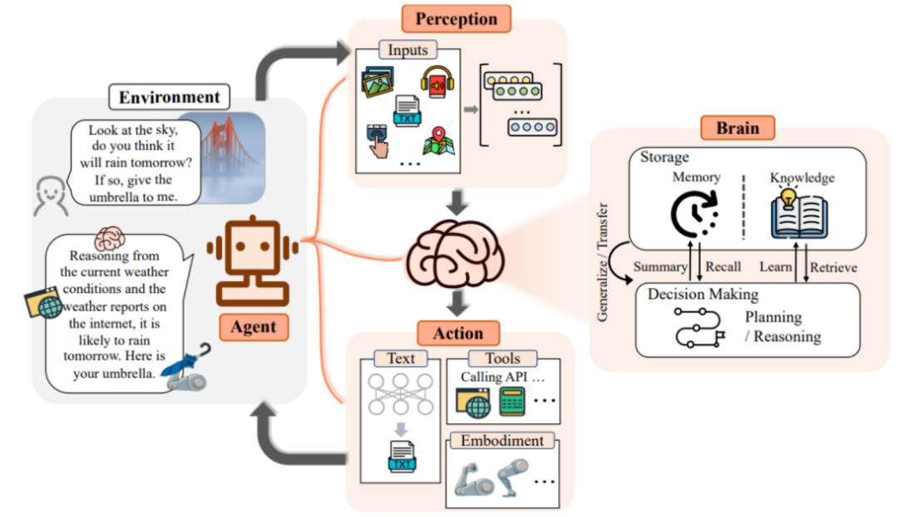
MirroS 團隊的 AgentGarten 論文登頂 HF 每日論文榜（105 讚），結合模擬器與神經渲染器打造可編程的互動世界，Agent 僅需 4 輪學習即達傳統 RL 數百萬輪的效果。這顯示高效率的模擬環境可大幅加速 Agent 訓練。此方法可能降低 RL 訓練成本並提升泛化能力。
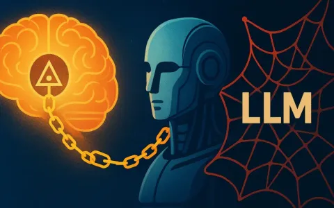
Meta 與微軟研究者聯名論文指出，LLM 自我改進循環中「擇優保留」步驟受評測噪聲影響，多數後續提案實際有害，量化了世代最佳候選者的「贏家詛咒」效應。這對當前依賴自我改進的模型訓練方法提出警告。研究提醒需更穩健的選擇機制，避免性能退化。
MemFit 論文提出長期 Agent 記憶系統，主打無需 LLM 呼叫的寫入路徑與多路檢索，在 LoCoMo 等三項基準達 SOTA，同時把記憶建構時間與成本降低數倍。這解決了 Agent 長期記憶的效率瓶頸。低成本高效記憶層將有助代理式 AI 實際部署。
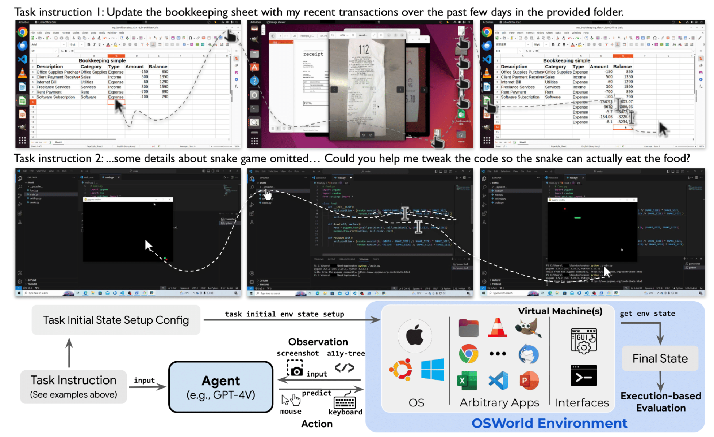
清華大學研究團隊牽頭多所高校推出 OSWorld-Science 基準，考驗計算機使用智能體在真實科研軟體中完成核磁分析、病理圖像處理等任務的規劃執行能力。此基準針對科研場景，比一般桌面操作更複雜。它將推動能自主操作科研工具的 AI 代理發展。
vLLM 社區孵化的 vLLM Semantic Router 推出並開源多模態決策模型 Decision 3.0 系列（0.6B 至 27B 六款），在 Jev 決策榜文本榜登頂超越 Jev 與微軟 Decision-1。該模型可用於客服分流、內容審核與模型路由。開源決策模型熱潮升溫，為企業提供低成本路由方案。
Arena 發布 2026 年第 41 周 AI 大模型榜（10 月 5 日至 11 日），Anthropic 全新 Claude Opus 5.5 Max 首次入榜即登頂智能體榜；國產模型中 kimi-k3-max 居綜合榜第 16，qwen3.8-max 第 22，小米 mimo-v2.6-pro 第 26，智譜 glm-5.3-max 第 27。這顯示 Anthropic 在代理能力上領先，國產模型穩居中上游。週榜為觀察模型實戰表現的重要指標。
本週一篇 HF 論文研究機器人群體中通訊訊號的湧現條件，發現僅當資訊具真實價值時機器人才會互相發訊，廉價閒聊訊號會自然消退。這為多 Agent 協作設計提供依據。研究顯示有效通訊需基於資訊價值，而非強制廣播。此發現有助設計更高效的多機器人系統。
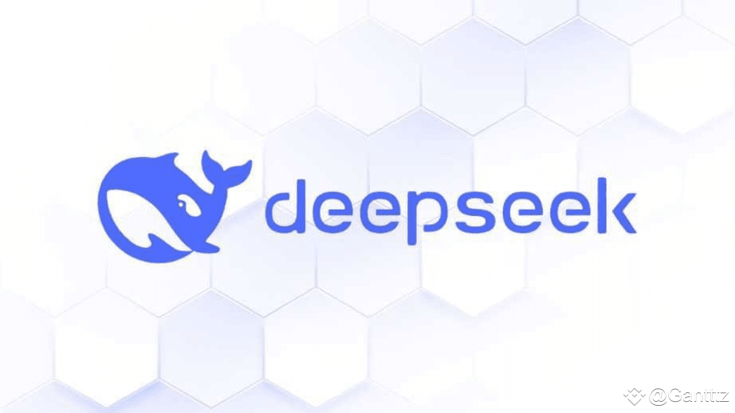
彭博報導 DeepSeek 計劃牽頭杭州機器人 AI 初創 Winverse AI 數千萬美元種子輪融資，投後估值約 4 億美元，創辦人為騰訊前首席科學家胡瀚，美團旗下龍珠投資等亦承諾出資。梁文鋒近期密集接觸具身智能創業者，正評估親自組隊或投資切入。若完成將是 DeepSeek 對初創企業最大投資之一，顯示其正加速布局具身智能。
阿里千問推出 Personal Agent「千問 Go!」，可代辦航班延誤理賠、淘寶價保退款、汽車保養預約等任務，已有用戶分享成功申請到理賠款。千問 APP 已上線體驗申請頁面逐步開放資格。這顯示中國大廠正將 AI 代理推向日常生活消費場景，搶佔個人助理入口。
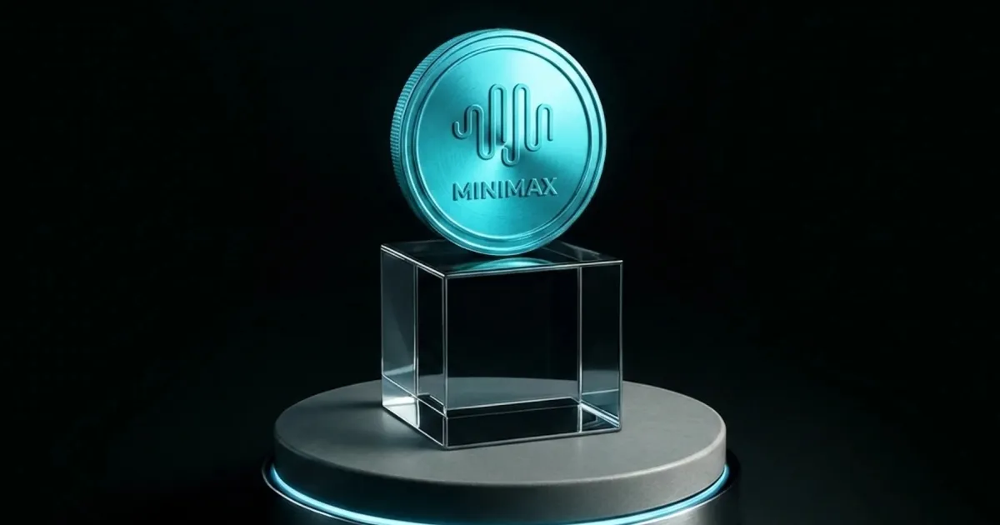
國產頭部大模型廠商 MiniMax 正式入駐天貓開設首家品牌官方旗艦店，上架 M Plan 訂閱套餐三檔位，月卡首單限時五折起售 24.5 元。這是繼智譜、阿里雲、千問辦公之後，又一家大模型廠商借雙 11 賣 Token。大模型廠商正嘗試電商化銷售，以擴大開發者與企業用戶。
面壁智能發布端側多模態大模型 MiniCPM-V 4.7（35B-A3B 與 1B 兩版），前者為首個端側無損流暢運行的開源 MoE 模型，憑自研 LES 前瞻專家調度技術，約 3GB 記憶體即可運行。這讓高效多模態模型能在終端裝置離線運作。開源策略有助中國模型在邊緣 AI 生態擴大影響力。
天數智芯在工博會「國芯展」首發天垓 300 IXL144 超節點，單機櫃集成 144 顆 GPU，為業界最高密度，兼容 CUDA 生態，每百萬有效 Token 成本較國際主流方案低 40%。這顯示中國國產 GPU 正以高密度與低成本方案挑戰國際競爭。超節點設計有助提升大模型訓練推論效率。
歐拉萬象聯合港科大（廣州）開源具身模型 UniWAM，揭示人機聯合訓練 Scaling Law，模型權重、訓練代碼與評測資源同步公開。這為具身智能研究提供開放基礎，有助加速人形機器人與通用操作模型發展。開源生態在具身智能領域正快速成形。人機聯合訓練的縮放規律可指導更大規模模型設計。
豆包今年 10 月完成重要功能升級，正式接入抖音商城並整合本地生活與抖音團購，消費類對話中嵌入商品藍字連結，雙十一前夕開啟「對話即購物」變現。這顯示字節跳動正將 AI 助理與電商生態深度整合。對話式購物可能改變流量入口與變現模式。
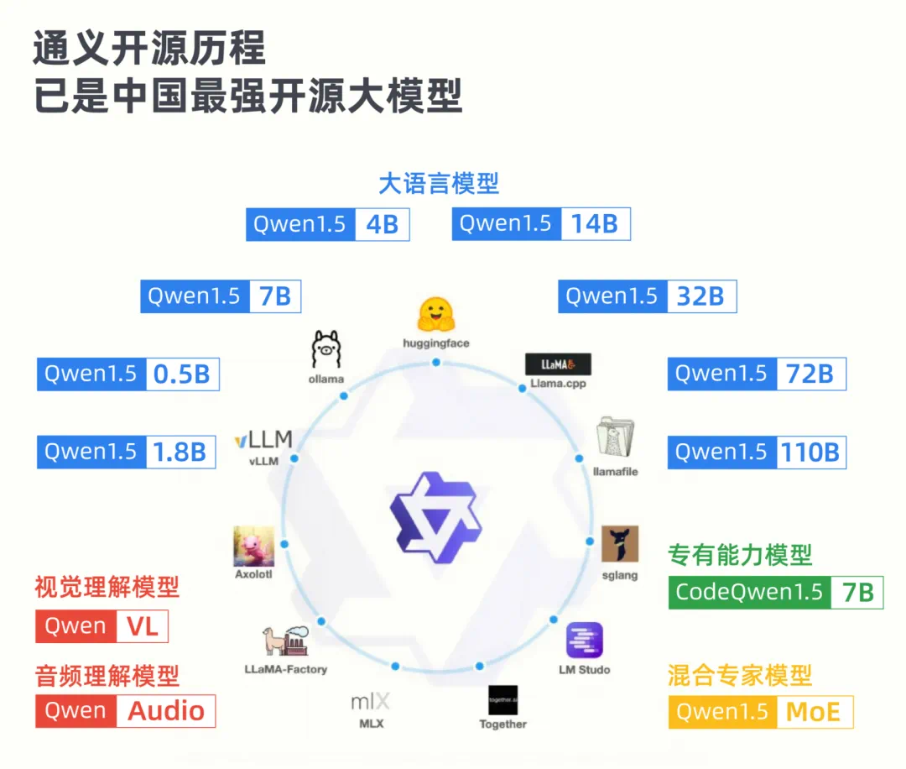
阿里千問發布面向超長程智能體任務的在線強化學習框架 QwenGyre，以彈性調度讓訓練與長任務並行，相同 GPU 預算下實現 1.78× 端到端加速。這針對長程代理任務的訓練效率瓶頸提出解決方案。高效 RL 框架將有助於開發更複雜的 AI 代理。
成都華西數醫「華數智醫醫療大模型」在 10 月 8 日更新的 MedBench 榜單以 76.3 分登頂全國第一；該評測由鍾南山等三位院士團隊牽頭，覆蓋 63 項臨床任務。這顯示中國醫療垂直大模型在專業評測中取得領先。醫療 AI 競爭正從通用能力轉向臨床任務實效。
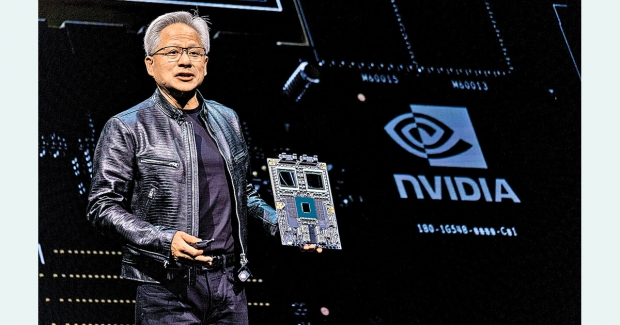
IDC 報告顯示輝達上半年中國資料中心 AI 加速器市占降至 34%、出貨年減 44%，華為出貨翻倍至 57.2 萬、市占達 28%，非 GPU 加速器出貨年增近八成。這顯示美國出口管制與國產替代正快速改變中國 AI 晶片市場格局。華為與其他本土廠商正填補輝達留下的空缺。
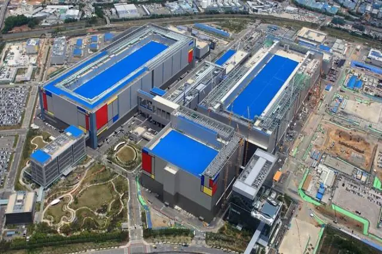
中國長鑫存儲宣布 4F² 架構 DRAM 取得進展，市場憂其挑戰三星與 SK 海力士記憶體霸主地位，成為引發亞洲半導體股賣壓的導火線之一。這顯示中國記憶體廠正加速技術追趕。若量產順利，可能改變全球 DRAM 競爭格局。
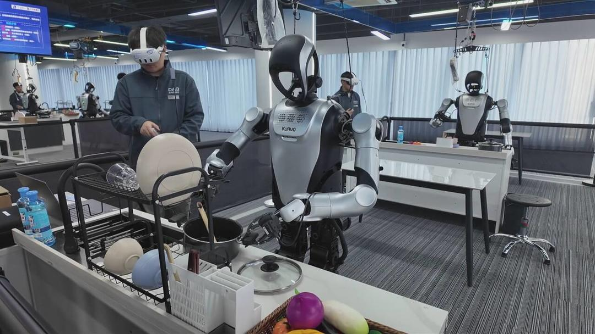
上海工博會上，美的旗下庫卡發布「開天 KAI」智能平台，用數字孿生讓 AI 決策先在虛擬工廠驗證，並推出協作機器人、具身智能產品與工業級輪式人形機器人 MIRO；威靈同場發布四款機器人核心部件新品。這顯示傳統製造巨頭正加速將 AI 與機器人整合進工業場景。數字孿生有助降低部署風險與成本。
中新社報導，合肥已集聚機器人產業鏈企業近 200 家，帶電作業飛行機器人、光伏清掃機器人等產品遠銷美國、西班牙、中東等 31 個國家和地區，靈巧手出貨超 1000 套覆蓋 10 餘個工業領域。這顯示中國機器人供應鏈正快速國際化。海外市場成為中國機器人企業重要增長來源。
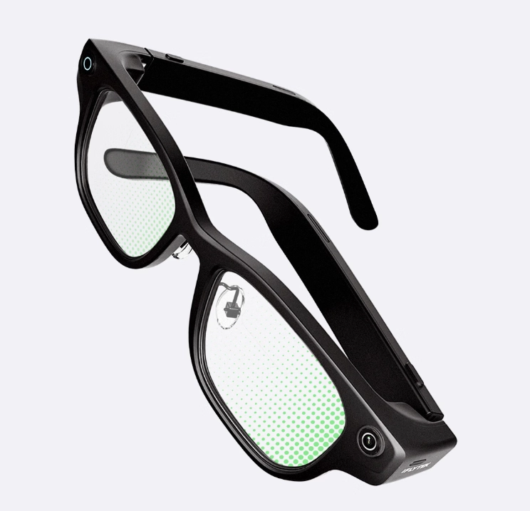
新一代全系列千問 AI 硬件（千問 AI 眼鏡 N1、N1 Pro 及耳夾式耳機）今日現貨發售，N1 Pro 支持眼動追蹤和虹膜支付，被定位為 Personal Agent 的重要載體。這顯示阿里正將 AI 助理從手機延伸至穿戴裝置。眼動與虹膜支付可能開闢新的互動與支付場景。
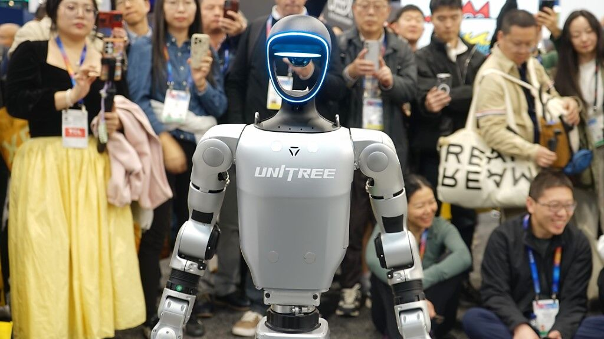
第 26 屆工博會機器人展以「具身工業 智領未來」為主題，展位達 56000 平方米、外資參展面積超 40%，打高爾夫、舉啞鈴等展示性場景背後都是為了驗證機械臂的工業級精度與負載指標。這顯示具身智能正從展示走向工業實用。中外廠商同台競爭，推動機器人性能與可靠性提升。
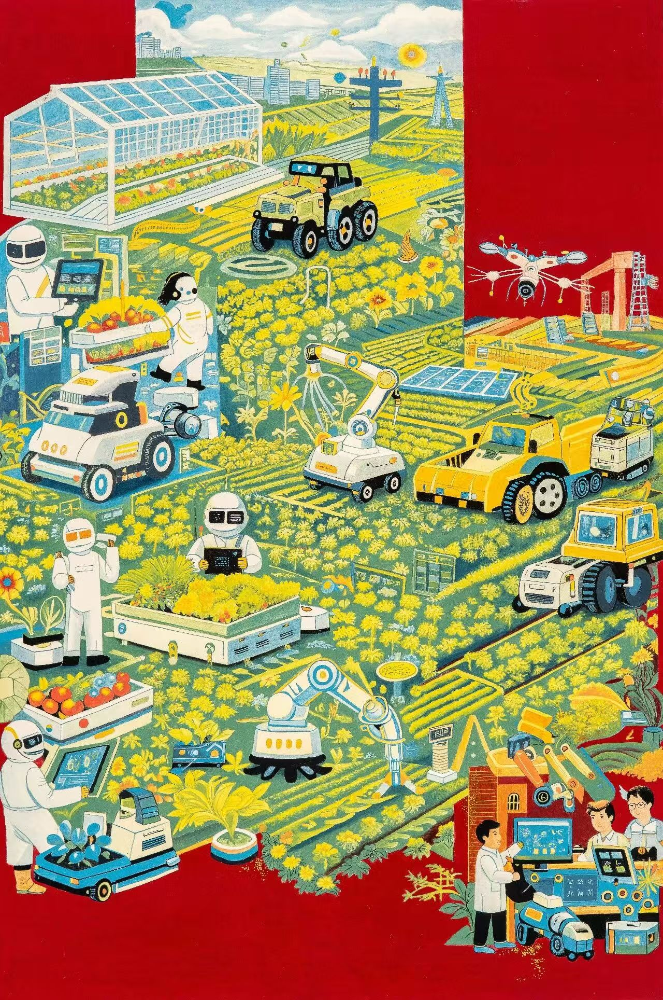
中華工商時報報導，捷佳潤科技研發的「土谛 AI」農業大模型通過中國—東盟國家人工智能應用合作中心出海，可結合地塊條件生成土地分析報告並為農田「巡診」。這是 AI 應用出海東盟市場的案例。農業垂直模型出海顯示中國 AI 正拓展新興市場應用場景。
開發者 Autumn-27 宣布，中國開源 AI 智能體 Artex 在被 CrowdStrike 指認為韓國多家銀行網絡攻擊工具後轉為閉源並停止更新；Artex 是連接 ChatGPT、Claude、DeepSeek 等外部模型的自動化滲透測試工具。這凸顯開源 AI 代理可能被濫用於網路攻擊。開發者選擇閉源以降低風險，但也引發開源安全治理討論。
新浪科技報導，《財富》聯合 BCG 發布 2026 年全球最具未來增長潛力 120 強榜單，優必選位列全球第 11、為排名最高的中國企業，英偉達第 16、OpenAI 第 18、蘋果第 55；優必選上半年營收 12.7 億元同比增長 104.2%。這顯示中國機器人企業在國際成長性榜單中獲得高度認可。人形機器人商業化進展為其估值提供支撐。
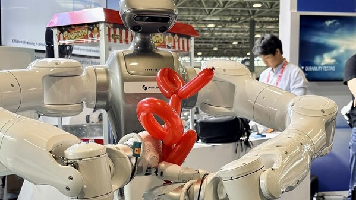
36 氪首發，氣象 AI 公司天序智能完成數千萬元 Pre-A+ 輪融資，由厚雪資本獨家投資，資金用於「凝空星座」衛星建設與能源垂類世界模型迭代。該公司已建成自有衛星星座並發布國內首個能源氣象大模型 CMA-WSP-AI。這顯示垂直領域 AI 與衛星數據結合的商業模式正獲資本青睞。